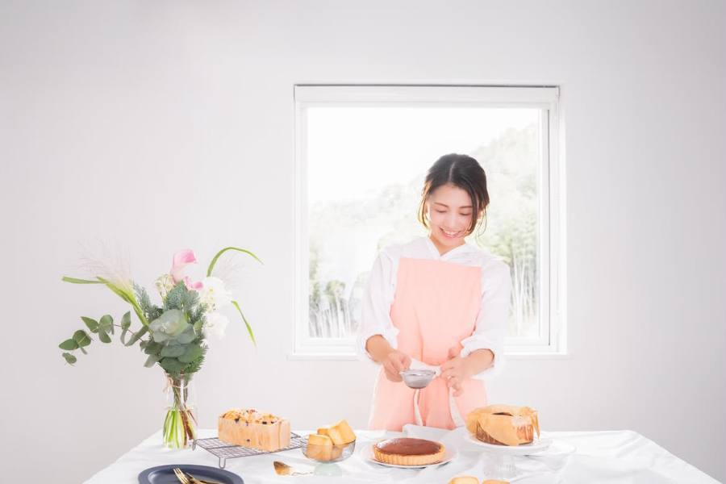
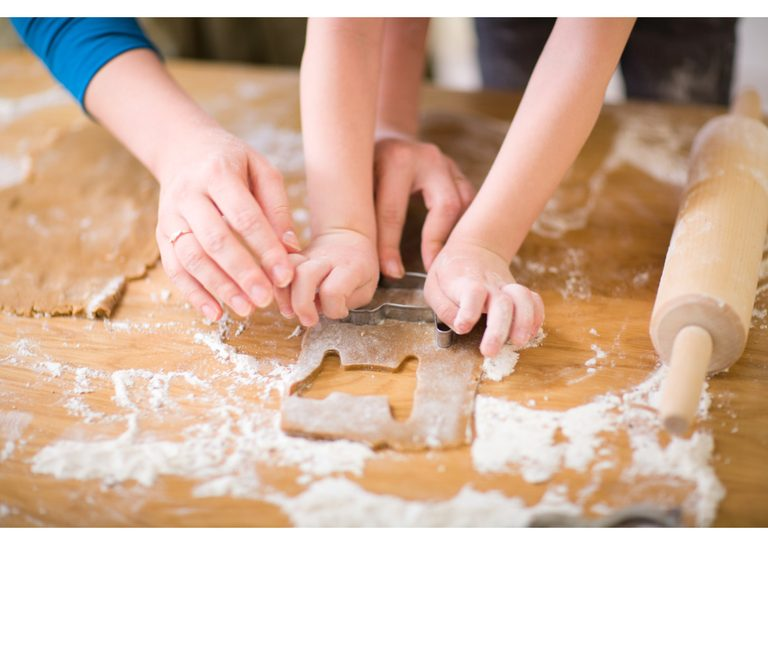
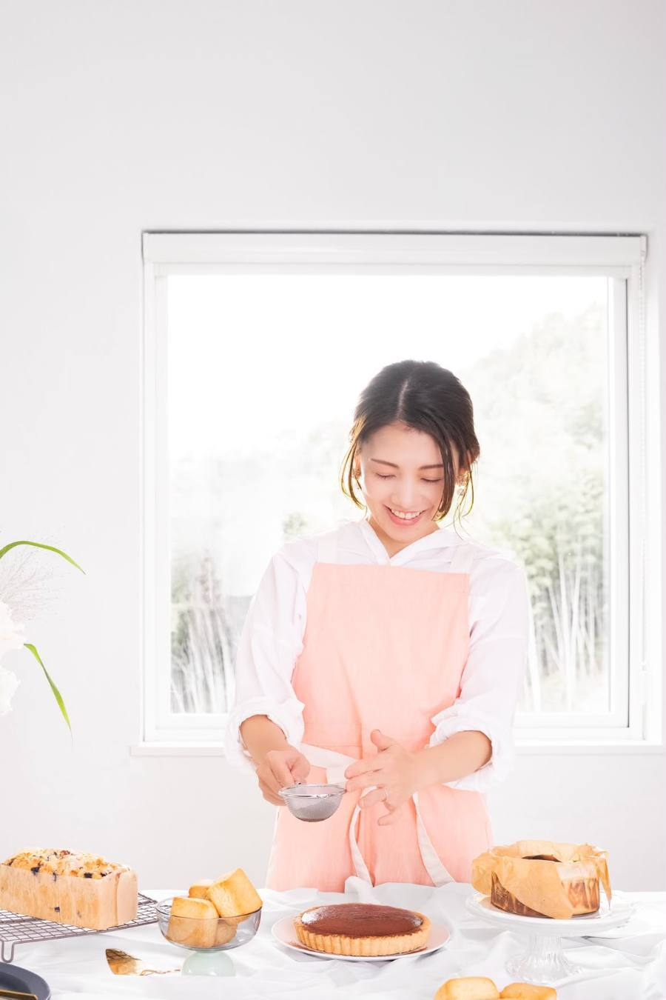
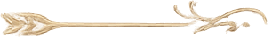

RISHELA SWEETS
18種類の 米粉×植物性×糀 sweets を習得
おうちカフェスイーツ講座
料金・詳しいコース内容は説明会でご案内します
からだに優しいお菓子のレパートリーを増やしたい
お菓子を楽しみながら健康も大切にしたい
お菓子からも栄養を取り入れたい
美容にも嬉しいおやつがあったら嬉しい
油や砂糖を控えたお菓子を作りたい
身体に優しいことと、美味しいこと。どちらかを選ぶ必要はありません。
Rishelaが目指しているのは、
ヘルシーも
美味しいも
どちらも叶えること。
毎日でも食べたくなる。家族から「また作って！」と言ってもらえる。そんなお菓子づくりが日常で当たり前になることをご提案しています。
ABOUT
3つを掛け合わせることで──
油控えめでも満足感がある
砂糖に頼りすぎなくても美味しい
簡単だから毎日でも作りたくなる
小さい子どもから大人まで楽しめる
甘酒の風味が気になってしまう
精製糖不使用だと物足りなく感じる
やさしい味だけど満足感が足りない
そんな経験をしたことはありませんか？
実は、米粉×植物性×糀のお菓子は、コクが足りなかったり、あっさりしすぎたりして、思うような美味しさにならないことも少なくありません。
でも、大丈夫。

何度も試作を重ね、たどり着いたのがRishelaだからこそのレシピ。
油は必要最低限。
精製糖不使用。
それでも
「こんなお菓子が欲しかった！」
そう言っていただける
美味しさをご提供しています。
料理の味付けも
最初から濃い味より、
薄味に少しずつ足していく方が
調整しやすいですよね。
それと同じように
油も甘味料も必要最小限に
することで、
食べる人に合わせて
調整できるレシピにしています。
ぜひ体験してください。
MENU
全 18 種類
くり返し使える
基本の発酵クリーム・素材レシピも
FUTURE
家族から「また作って！」と言われるおやつが増える
油や砂糖を控えながらも、美味しさを諦めなくていい
おうちでカフェのような時間を楽しめる
毎日のお菓子作りがもっと気軽になる
身体にやさしいおやつが暮らしの一部になる
本当に油が少ないのに、こんなに美味しくできるなんて驚きました。罪悪感なく食べられるのが嬉しいです。
子どもが「お母さん、また作って！」と何度もリクエストしてくれます。安心して食べさせられるのが何より嬉しいです。
お菓子作り初心者の私でも、工程がシンプルで失敗なく作れました。コツやポイントを丁寧に教えていただけて感動です。
糀スイーツの美味しさに感動しました。市販のおやつを買うことが減り、家族みんなが喜んで食べてくれています。
身体にやさしいのに満足感があって、毎日のおやつが罪悪感のない時間に変わりました。おうちカフェ気分を楽しんでいます。
など、たくさんの嬉しいお声をいただいています。
COURSE
── あなたはどちら？ ──
趣味として楽しみたい
趣味コース

家族に安心して食べてもらえるおやつを作りたい。毎日のお菓子作りを自宅でもっと楽しみたい。そんな方のためのコースです。
レシピを通して、おうち時間がもっと楽しく、もっと豊かになる。そんな時間をお届けします。
BONUS
PROFILE

Rishela ともよ
米粉×植物性×糀 sweets 講師
小学生2人、2歳の息子を育てる3児の母。子どもの体調不良をきっかけに「毎日食べるもの」について学び始めました。
たくさんの米粉スイーツや植物性のお菓子を学ぶ中で感じたのは、身体に優しいと言われるお菓子でも、油や甘味料が多く使われていること。
だから私は、油も甘味料も必要最低限。それでも「美味しい！」と笑顔になれるレシピを何度も試作し続けてきました。
お菓子作りは、特別なものではなく、毎日の暮らしを少し幸せにしてくれるもの。そんな時間を、この講座で一緒に楽しめたら嬉しいです。
GUIDANCE
など、詳しくご説明いたします。
毎日のおやつが変わると、暮らしが少し変わります。
家族との時間が、もっと笑顔になります。お菓子作りが、もっと気軽になります。
そして、「美味しい」と「身体にやさしい」をどちらも諦めなくていい毎日が始まります。
趣味として楽しみたい方も。これから仕事にしていきたい方も。あなたにぴったりの学び方をご用意しています。

まずは説明会で、お会いできることを楽しみにしています。
料金・コース詳細は説明会でご案内します